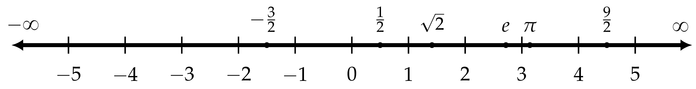
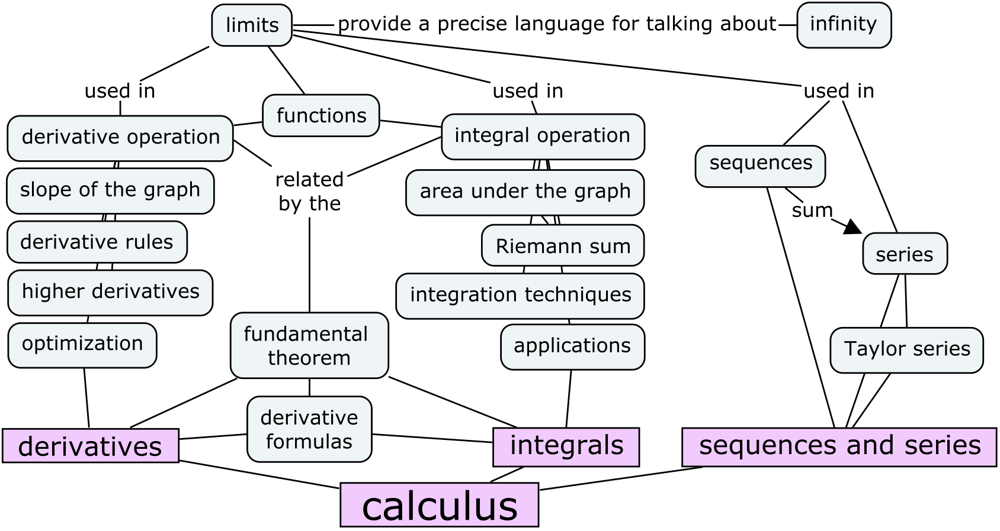
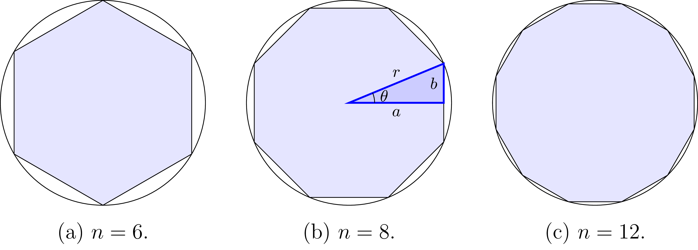
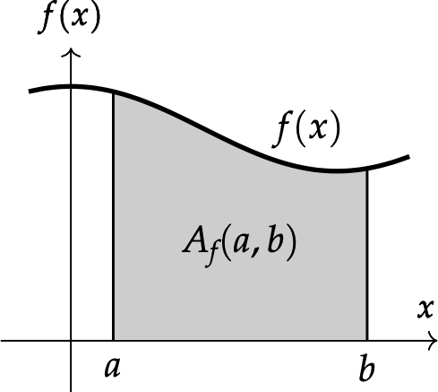
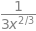
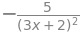
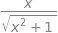

Appendix F — Calculus tutorial#
Calculus is the study of the properties of functions. We use calculus to describe the limit behaviour of functions, calculate their rates of change, and calculate the areas under their graphs. In this tutorial, you’ll learn about all these operations through math formulas, interactive visualizations, and code examples.
Click the binder button  or this link
or this link bit.ly/calctut3 to run this notebooks interactively.
Notebook setup#
%pip install --quiet sympy numpy scipy seaborn ministats
Note: you may need to restart the kernel to use updated packages.
import matplotlib.pyplot as plt
import numpy as np
import seaborn as sns
sns.set_theme(
context="paper",
style="whitegrid",
palette="colorblind",
rc={"font.family": "serif",
"font.serif": ["Palatino", "DejaVu Serif", "serif"],
"figure.figsize": (5, 1.7)},
)
%config InlineBackend.figure_format = 'retina'
# simple float __repr__
np.set_printoptions(legacy='1.25', threshold=100)
from sympy import init_printing
init_printing()
Introduction#
Example: car trip#
Suppose you’re driving to see a friend in a neighbouring town. The total length of the journey is 27000 m (27 km) along a straight road. We can describe your position over time as a function \(x(t)\), and use the car’s trip odometer to measure the distance travelled. Right before you leave, which we’ll call \(t=0\), you reset the trip odometer so it reads \(x(0)=0\) m.
Velocity#
The derivative function \(x^{\prime\!}(t)\), pronounced “\(x\) prime,” describes how the function \(x(t)\) changes over time. In this example \(x^{\prime\!}(t)\) is the car’s velocity. If your current velocity is \(x^{\prime\!}(t)=15\) m/s, then the car’s position \(x(t)\) is increasing by \(15\) m each second. If you maintain this velocity, the position will increase at a constant rate: \(x(0)=0\) m, \(x(1)=15\) m, \(x(2)=30\) m, and so on until \(t=1800\) s when you’ll have travelled \(1800\times 15 = 27000\) m and reached your destination.
To estimate the time remaining in the trip, assuming the velocity \(x^{\prime\!}(t)\) stays constant, you can divide the remaining distance by the current velocity: $\(\text{time remaining at } t \; \; =\; \frac{ 27000 - x(t) }{ x^{\prime\!}(t) } \;\;\; \textrm{s}.\)\( The bigger the derivative \)x^{\prime!}(t)$, the faster you’ll arrive. If you drive two times faster, the time remaining will be halved.
Inverse problem#
Imagine that the car’s odometer is busted and you don’t have any way to measure the distance \(x(t)\) you have travelled over time. The car’s speedometer is still working though, so you know the velocity \(x^{\prime\!}(t)\) at all times. Is there a way to calculate the distance travelled using only the information from the speedometer?
There is! You can infer the position at time \(t\) from the velocity \(x^{\prime\!}(t)\). Think about it—if the speedometer reports \(x^{\prime\!}(t)=15\) m/s, then you know that the car’s position is increasing at the rate of \(15\) m each second. We can describe the total distance travelled until time \(t=\tau\) (the Greek letter tau) as the integral of the velocity function \(x^{\prime\!}(t)\) between \(t=0\) and \(t=\tau\): $\( x(\tau) \; = \; \int_{t=0}^{t=\tau} x^{\prime\!}(t)\, dt. \)$
The integral symbol \(\int\) is an elongated \(S\) that stands for sum. To calculate the total distance travelled, we imagine splitting the time between \(t=0\) and \(t=\tau\) into many short time intervals \(dt\). During each instant, the position increases by \(x^{\prime\!}(t)dt\) m, where \(x^{\prime\!}(t)\) is the velocity (measured in m/s), and \(dt\) is the time interval (measured in seconds). The integral \(\int_{0}^{\tau} x^{\prime\!}(t)\, dt\) calculates the “sum” of these \(x^{\prime\!}(t)\,dt\) contributions accumulated between \(t=0\) and \(t=\tau\).
The situation described in the car example shows that calculus concepts are not theoretical constructs reserved only for math specialists, but common ideas you encounter every day. The derivative \(q^{\prime\!}(t)\) describes the rate of change of the quantity \(q(t)\). The integral \(\int_a^b q(t)dt\) measures the total accumulation of the quantity \(q(t)\) during the time period from \(t=a\) to \(t=b\).
Doing calculus: then and now#
Symbolic calculations using pen and paper#
The pen-and-paper approach is a good way to learn calculus because manipulating math symbols “by hand” develops your intuitive understanding of calculus procedures. Writing math on paper allows you to use high-level abstractions and arrive at exact symbolic answers.
Symbolic calculations using SymPy#
The Python library SymPy allows you to do symbolic math calculations on a computer. We’ll now illustrate the main SymPy capabilities through some examples.
To use SymPy,
we start by importing the sympy module under the alias sp,
then define the symbolic variable x.
import sympy as sp
# define symbolic variable x
x = sp.symbols("x")
The symbols function creates SymPy symbolic variables.
Unlike ordinary Python variables that hold a particular value,
SymPy variables act as placeholders that can take on any value.
We use symbolic variables to write expressions,
just like we do in pen-and-paper calculations.
expr = 4 - x**2
expr

SymPy is very useful when learning math
because it provides functions for common math operations.
For example,
to factor the expression expr,
we can call the function sp.factor.
sp.factor(expr)

You can substitute a particular <value> for the variable \(\tt{x}\)
into the expression expr by calling the method expr.subs()
and passing in a python dictionary object {x:<value>}.
expr.subs({x:1})

We can also also ask SymPy to solve the equation expr = 0,
which means to find the values of \(x\) that satisfy the equation \(4 - x^2 = 0\).
sp.solve(expr, x)

The equation has two solutions so solve returns a list.
Here is another example,
where we use sp.solve to solve the quadratic equation \(x^2 + 2x - 8 = 0\).
sp.solve(x**2 + 2*x - 8, x)

We can check that \(x = 2\) and \(x = -4\) satisfy the equation \(x^2 + 2x - 8 = 0\):
When \(x = 2\), we get \(x^2 + 2x - 8 =(2)^2 + 2(2) - 8 = 4 + 4 - 8 = 0\).
When \(x = -4\), we get \(x^2 + 2x - 8 =(-4)^2 + 2(-4) - 8 = 16 - 8 - 8 = 0\).
Another useful function is sp.simplify,
which you can use to simplify any math expression.
sp.simplify(5*x - 3*x + 42)
SymPy combined the \(5x\) term with the \(-3x\) term to obtain the \(2x\) term in the simplified output expression.
Sum{y can do many other math operations. We’ll discuss the SymPy functions for doing calculus in the next sections. To learn more about SymPy, I invite you to check out the SymPy tutorial.
Numerical computing using NumPy#
The Python library NumPy makes it easy to do numerical calculations on a computer.
Let’s start by importing the numpy module under the alias np,
which is the usual convention.
import numpy as np
Her is how e can compute a numerical approximation to \(\sqrt{2}\).
np.sqrt(2)
NumPy makes it easy to work with arrays of numbers, which are conceptually similar to Python lists, but enable powerful parallel calculations. To give you some idea of this power, we’ll now show create an array of 1001 numbers, and apply a function to each input in this array, to obtain an array of 1001 outputs using just a few lines of code.
We start by calling the NymPy function np.linspace to create the array of smoothly varying inputs.
We specify the starting point 0,
the end point 2,
and number of values we want in the array.
xs = np.linspace(0, 2, 1001)
xs
array([0. , 0.002, 0.004, ..., 1.996, 1.998, 2. ])
Next,
we define a Python function h
that corresponds to the math function \(h(x) = 4 - x^2\).
def h(x):
return 4 - x**2
We can now apply this function to the array of inputs xs
to obtain an array of outputs hxs.
%%time
hxs = h(xs)
hxs
CPU times: user 41 μs, sys: 4 μs, total: 45 μs
Wall time: 41.5 μs
array([4. , 3.999996, 3.999984, ..., 0.015984, 0.007996, 0. ])
Note that single call to h(xs)
applied the function h to all 1001 inputs in the array xs at once.
This is called vectorization,
and one of the great powers of NumPy:
we can write simple math expression that describe
what we want to do for each input x,
and then NumPy performs these mathematical operations on entire arrays at once,
eliminating the need for writing for-loops.
Using NumPy vectorization not only makes numeric code easier to read,
but also also makes it run faster!
To illustrate this speed up,
let’s look at the equivalent Python code
for applying h to the list of inputs using Python.
%%time
# Create a list of inputs `xs_list`
xs_list = [0.002*i for i in range(0, 1001)]
# Apply the function `h` to each input in the list `xs_list`
hxs_list = [h(x) for x in xs_list]
# Display the first three and last three values in `hxs_list`
print(*hxs_list[0:3], "...", *hxs_list[-3:])
4.0 3.999996 3.999984 ... 0.015983999999999998 0.007995999999999892 0.0
CPU times: user 285 μs, sys: 0 ns, total: 285 μs
Wall time: 283 μs
Comparing the timing information output of this cell to the timing information shown earlier, we see that the basic Python version took roughly 10 times longer than the NymPy code.
Scientific computing using SciPy#
The Python module SciPy is a toolbox of scientific computing helper functions. For example, computing the integral \(\int_{0}^2 h(x)dx\), which corresponds to the area under the graph of the function \(h(x) = 4 - x^2\) between \(x=0\) and \(x=2\) requires only two lines of code.
from scipy.integrate import quad
quad(h, 0, 2)[0]

The helper function quad is a powerful tool
that the ancients could only dream of.
Applications of calculus#
We use calculus concepts to describe various quantities in physics, chemistry, biology, engineering, machine learning, business, economics and other domains where quantitative analysis is used. Many laws of nature are expressed in terms of derivatives and integrals, so it’s essential that you learn the language of calculus if you want to study science.
Math prerequisites#
Let’s start with a review of some key ideas from high school math, which we’ll need as building blocks for calculus.
Sets notation#
Sets are collections of math objects. Many math ideas are expressed in the language of sets, so it’s worth knowing the notation for sets.
\(\{ \textrm{ definition } \}\): we use curly brackets to define sets. The definition in the curly brackets is either a description of the set’s contents, or a list of the elements in the set.
\(\mathbb{N}\): the set of natural numbers \(\mathbb{N} = \{0,1,2,3,4,5,\ldots\}\).
\(\mathbb{N}_+\): the positive natural numbers \(\mathbb{N}_+ = \{1,2,3,4,5,\ldots\}\).
\(\mathbb{R}\): the set of real numbers.
\(\mathbb{R}_+\): the set of nonnegative real numbers.
\(x \in S\): this statement is read “\(x\) is an element of \(S\).” We use this notation to indicate the “type” of the variable \(x\). For example, writing “\(x \in \mathbb{R}\)” tells us \(x\) is a real number.
We can use the set-builder notation \(\{\, \cdot \; | \; \cdot \, \}\) to define new sets. Inside the curly brackets, we first describe the general kind of mathematical objects we are talking about, followed by the symbol “\(|\)” (which stands for “such that”), followed by the conditions that identify the elements of the set. For example, the set of nonnegative real numbers \(\mathbb{R}_+\) is defined as “all real numbers \(x\) such that \(x \geq 0\),” which is expressed compactly as \(\mathbb{R}_+ = \{ x \in \mathbb{R} \; | \; x \geq 0 \}\) using the set-builder notation.
Python sets#
S = {1, 2, 3}
T = {3, 4, 5, 6}
The statement \(x \in S\) means \(x\) is one of the elements of the set \(S\).
In Python, we can use the in operator to check if a value is inside the set.
1 in S
True
The in statement returns False for a value that are not in the set.
7 in S
False
We can perform set operations like union, intersection, and set difference as follows:
print("S ∪ T =", S.union(T))
print("S ∩ T =", S.intersection(T))
print("S \\ T =", S.difference(T))
S ∪ T = {1, 2, 3, 4, 5, 6}
S ∩ T = {3}
S \ T = {1, 2}
The number line#
The number line is a visual representation of the set of real numbers \(\mathbb{R}\)

The set of real numbers includes the natural numbers \(\{0,1,2,3,\ldots\}\), the integers \(\{\ldots, -3,-2,-1,0,1,2,3,\ldots\}\), rational numbers like \(-\frac{3}{2}\), \(0.5\), and \(\frac{9}{2}\), as well as irrational numbers like \(\sqrt{2}\), \(e\), and \(\pi\). All the numbers you will run into when doing math can be visualized as a point on the number line.
Infinity#
The math symbol \(\infty\) describes the concept of infinity. We use \(\infty\) to represent an infinitely large quantity, that is greater than any number you can think of. Geometrically speaking, you can imagine the number line extends to the right forever towards infinity, as illustrated in the number line figure above. The number line also extends forever to the left, which we denote as negative infinity \(-\infty\).
Infinity is not a number but a process. When we use the symbol \(+\infty\), we’re describing the process of moving to the right on the number line forever. We go past larger and larger positive numbers and never stop.
Infinity is a key concept in calculus, so it’s important that we develop a precise language to talk about infinitely large numbers and procedures with an infinite number of steps, which we’ll do in the section on limits below.
Functions#
In Python, we define functions using the def keyword.
For example, the code cell below defines the function \(f(x) = x^2\),
then evaluate it for the input \(x=3\).
# Define the function `f`
def f(x):
return x**2
# Call the function `f` on the input x=3
f(3)
Function graphs#
The graph of the function \(f(x)\) is obtained by plotting a curve that passes through the set of input-output coordinate pairs \((x, f(x))\), as \(x\) varies over a range of inputs.
import numpy as np
xs = np.linspace(-3, 3, 1001)
fxs = f(xs)
The function linspace(-3,3,1001)
creates an array of 1001 points in the between \(-3\) and \(3\).
We store this sequence of inputs into the variable xs.
Next, we compute the output value \(f(x)\) for each of the inputs \(x\) in the array xs
and store the result in the array fxs.
We can now use the function sns.lineplot() to generate the plot.
import seaborn as sns
sns.lineplot(x=xs, y=fxs, label="f(x)");
{kind=link}
The helper function plot_func from the ministats library
performs the same three steps and produces the same output.
{kind=link}
Inverse functions#
The inverse function \(f^{-1}\) performs the inverse operation of the function \(f\). If you start from some number \(x\), apply \(f\), then apply \(f^{-1}\), you’ll arrive—full circle—back to the original number \(x\):
The inverse of the function \(f(x) = x^2\) is the square root function \(f^{-1}(x) = \sqrt{x}\). Earlier we computed \(f(3) = 9\). If we apply the inverse function to \(9\), we get \(f^{-1}(9) = \sqrt{9} = 3\).
from math import sqrt
sqrt(9)

Two other important inverse functions are the exponential function \(e^x\) and logarithmic functions \(\log(x)\). The logarithmic function \(\log(x)\) is the inverse of the exponential function \(e^x\), and vice versa. If we compute the exponential of any number, then apply the logarithmic function, we get back the original number.
from math import exp, log
log(exp(5))

Similarly, if we take the logarithm of any positive number, then apply the exponential function on the result, we get back to the original number.
exp(log(4))
Function properties#
We use the notation \(f \colon A \to B\) to denote a function from the input set \(A\) to the output set \(B\).
\(A\) is the domain of \(f\): the set of allowed inputs for the function.
\(B\) is the image of \(f\): the set of possible outputs of the function.
For example, the domain of the function \(f(x) = x^2\) is \(\mathbb{R}\) (any real number) and its image is \(\mathbb{R}_+\) (nonnegative real numbers), so we say \(f\) is a function of the form \(f \colon \mathbb{R} \to \mathbb{R}_+\).
Inventory of functions#
We’ll now go over a few commonly used math functions and look at their graphs.
Constant function#
from ministats.calculus import plot_func
def const(x):
return 3
ax = plot_func(const, xlim=[-2,2])
ax.set_ylim(-0.1, 4)
ax.set_title("Graph of the constant function $f(x) = 3$");
{kind=link}
Linear function#
def line(x):
return x
ax = plot_func(line, xlim=[-2,2])
ax.set_title("(a) Graph of the linear function $f(x) = x$");
{kind=link}
Quadratic function#
def quadratic(x):
return x**2
ax = plot_func(quadratic, xlim=[-2,2])
ax.set_title("(b) Graph of the quadratic function $f(x) = x^2$");
{kind=link}
Polynomial functions#
def poly(x):
return x**3 - 2*x*2 + x
ax = plot_func(poly, xlim=[-2,3], flabel="P_3")
ax.set_title("Graph of the polynomial $P_3(x) = x^3 - 2x^2 + x$");
{kind=link}
Exponential function#
ax = plot_func(np.exp, xlim=[-2,2])
ax.set_title("(c) Graph of the exponential function $f(x) = e^x$");
{kind=link}
Absolute value function#
ax = plot_func(np.abs, xlim=[-2,2])
ax.set_title("(d) Graph of the absolute value function $f(x) = |x|$");
{kind=link}
Square root function#
ax = plot_func(np.sqrt, xlim=[0,4])
ax.set_title("(e) Graph of the square root function $f(x) = \\sqrt{x}$");
{kind=link}
Logarithmic function#
ax = plot_func(np.log, xlim=[0.00001,8])
ax.set_ylim(-2, 2.5)
ax.set_title("(f) Graph of the logarithmic function $f(x) = \\ln(x)$");
{kind=link}
Functions with discrete inputs#
Later in this tutorial, we’ll study functions with discrete inputs, \(a_k : \mathbb{N} \to \mathbb{R}\), which are called sequences. We can express sequences by writing the first few values the sequence \([a_0, a_1, a_2, a_3, \ldots]\), which correspond to evaluating \(a_k\) for \(k=0\), \(k=1\), \(k=2\), \(k=3\), etc.
Geometry of rectangles and triangles#
The area of a rectangle of base \(b\) and height \(h\) is \(A = bh\).
The area of a triangle is equal to \(\frac{1}{2}\) times the length of its base \(b\) times its height \(h\): \(A = \tfrac{1}{2} b h\).
Trigonometric functions#
The trigonometric functions \(\sin\theta\) and \(\cos\theta\) are used in physics and engineering.
Sine function#
The trigonometric functions np.sin and np.cos take inputs in radians.
For example,
if you need to compute \(\sin(\frac{\pi}{6}\;\textrm{rad})\)
you can simplay call the function np.sin
on the input np.pi/6:
np.sin(np.pi/6)
To compute \(\sin(30^\circ)\), you need to fist use the conversion factor of \(\frac{\pi\;\textrm{rad}}{180^\circ}\) to convert the angle from degrees to radians. In angle \(\theta = 30^\circ\) is \(\theta = 30^\circ \frac{\pi\;\textrm{rad}}{180^\circ}\) in radians.
np.sin(30 * np.pi/180)
Let’s plot the graph of \(f(\theta) = \sin\theta\) over two full cycles.
xlim = [-0.1, 4*np.pi+0.1]
ax = plot_func(np.sin, xlim=xlim)
ax.set_title(r"(a) The sine function $f(\theta) = \sin(\theta)$");
ax.set_xlabel("$\\theta$")
ax.set_ylabel("$f(\\theta)$");
{kind=link}
Cosine function#
The cosine function is the same as the sine function shifted by \(\frac{\pi}{2}\) to the left: \(f(\theta) = \cos(\theta) = \sin(\theta+\frac{\pi}{2})\).
xlim = [-0.1, 4*np.pi+0.1]
ax = plot_func(np.cos, xlim=xlim)
ax.set_title(r"(b) The cosine function $f(\theta) = \cos(\theta)$")
ax.set_xlabel("$\\theta$")
ax.set_ylabel("$f(\\theta)$");
{kind=link}
Overview and a look ahead#
The concept map below shows an overview of the calculus ideas you’ll learn in the rest of the tutorial.

Limits#
We use limits to describe infinitely large quantities, infinitely small quantities, and procedures with infinitely many steps. Limits are an essential theoretical building block for calculus. We use limits to define derivatives, integrals, and series, so this is where we’ll start.
Example 1: Archimedes’ approximation to \(\pi\)#
Suppose we want to calculate the area of a circle of radius \(r=1\). Today we know the formula for the are of the circle is \(A_{\circ} = \pi r^2\), and the area of this circleis \(\pi\), but let’s imagine that we’re in ancient times and don’t know the formula.
Sometime around 250 BCE, Archimedes of Syracuse came up with a clever idea to approximate the area of the circle using a regular polygon with \(n\) sides inscribed in the circle. The figure below shows the hexagonal (6-sides), octagonal (8-sides), and dodecagonal (12-sides) approximations to the circle.

Part (b) of the figure highlights one of the \(16\) identical triangular slices for the case \(n=8\). The hypotenuse of this triangle has length \(r\), the angle \(\theta\) is \(\frac{360\circ}{16} = \frac{2\pi}{16} = \frac{\pi}{8}\,\) rad, and its sides have length \(a=r\cos(\frac{\pi}{8})\) and \(b=r\sin(\frac{\pi}{8})\). The area of this triangle is therefore \(A_t = \frac{1}{2}ab=\frac{1}{2}r\cos(\frac{\pi}{8})r\sin(\frac{\pi}{8})\), and the area of the octagon is \(16A_t = 8r^2\cos(\frac{\pi}{8})\sin(\frac{\pi}{8})\).
More generally, if we draw a polygon with \(n\) sides inscribed inside of the circle, the total area of the \(2n\) triangles will be:
The \(n\)-sided-polygon approximation to the area of the circle becomes more and more accurate as \(n\) grows. Here is the code for computing the approximations to the area of a circle with an increasing number of sides.
def calc_area(n, r=1):
theta = 2 * np.pi / (2 * n)
a = r * np.cos(theta)
b = r * np.sin(theta)
A_n = 2 * n * a * b / 2
return A_n
for n in [6, 8, 12, 50, 100, 1000, 10000]:
A_n = calc_area(n)
error = A_n - np.pi
print(f"{n=: >6}, A(n)= {A_n:.10f}, {error=:.8f}")
n= 6, A(n)= 2.5980762114, error=-0.54351644
n= 8, A(n)= 2.8284271247, error=-0.31316553
n= 12, A(n)= 3.0000000000, error=-0.14159265
n= 50, A(n)= 3.1333308391, error=-0.00826181
n= 100, A(n)= 3.1395259765, error=-0.00206668
n= 1000, A(n)= 3.1415719828, error=-0.00002067
n= 10000, A(n)= 3.1415924469, error=-0.00000021
In the limit as \(n \to \infty\), the \(n\)-sided-polygon approximation to the area of the circle will becomes exactly equal to the area
Example 2: Euler’s number#
A load with annual interest rate of 100% and compounding twice per year will grow by \((1+50\%)(1+50\%) = (1+\frac{1}{2})(1+\frac{1}{2}) = 2.25\) by the end of the year:
(1+1/2)**2

If the bank computes the interest three times per year, the amount owed after one year is \((1+\frac{1}{3})(1+\frac{1}{3})(1+\frac{1}{3}) = 2.370\).
(1+1/3)**3

With quarterly compounding:
(1+1/4)**4

Monthly compounding:
(1+1/12)**12

Daily compounding:
(1+1/365)**365

Compounding 1000 times per year:
(1+1/1000)**1000

In the limit as \(n \to \infty\), the expression \((1+\frac{1}{n})^n\) converges to Euler’s number \(e\):
Limits at infinity#
Limits are useful for describing the behaviour of functions.
Example 3#
Consider the function \(f(x) = \frac{1}{x}\). What happens to \(f(x)\) as \(x\) goes to infinit? As \(x\) becomes larger and larger, the fraction \(\frac{1}{x}\) becomes smaller and smaller. In the limit where \(x\) goes to infinity, \(\frac{1}{x}\) approaches zero: \(\lim_{x\to\infty}\frac{1}{x} = 0\). We can see this by looking at the graph of \(f(x)\).
from ministats.calculus import plot_limit
from ministats.calculus import plot_ellipse
# Define the function f(x) = 1/x
def finv(x):
return 1/x
ax = plot_limit(finv, xlim=[0,10], ylim=[0,5])
ax.set_xticks(range(0,11))
ax.set_xlabel("$x$")
ax.set_title(r"(a) Graph of $f(x) = \frac{1}{x}$")
# Ellipse annotation at x \to \infty
plot_ellipse(ax, 10, 0.1, 3, 0.5, lx=10, ly=0.5, ha="right", va="bottom",
label=r"$\lim_{x \to \infty}\; \frac{1}{x} = 0$");
{kind=link}
Limit formulas#
The limit of the sum, difference, product, and quotient of two functions are computed as follows:
Example 4#
Calculate \(\lim_{x\to \infty} \frac{2x+1}{x}\,\). We’re given the function \(g(x)=\frac{2x+1}{x}\) and must determine what the function looks like for very large values of \(x\). We can rewrite the function as \(\frac{2x+1}{x}=2+\frac{1}{x}\) then apply the sum formula for limits: $\( \lim_{x\to \infty}\!\! \tfrac{2x+1}{x} = \lim_{x\to \infty}\!\Big( 2 + \tfrac{1}{x} \Big) = \lim_{x\to \infty} 2 + \!\lim_{x\to \infty} \tfrac{1}{x} = 2 + 0 = 2. \)$
As \(x\) goes to infinity, \(\frac{1}{x}\) goes to \(0\), so the second term vanishes, leaving only the \(2\). We can confirm this visually by looking at the graph of \(g(x)\).
# Define the function g(x) = (2x+1)/x
def g(x):
return (2*x+1)/x
ax = plot_limit(g, xlim=[0,10], ylim=[0,5])
ax.set_xticks(range(0,11))
ax.set_xlabel("$x$")
ax.set_title("(b) Graph of $g(x) = \\frac{2x+1}{x}$")
# Ellipse annotation at x \to \infty
plot_ellipse(ax, 10, 2.1, 3, 0.5, lx=10, ly=1.4, ha="right",
label=r"$\lim_{x \to \infty}\; \frac{2x+1}{x} = 2$");
{kind=link}
Limits at a point#
We can use limit expressions to describe what happens when a function approaches some number \(x=a\). The limit expression \(\lim_{x \to a^+} f(x)\) describes the behaviour of the function \(f(x)\) as \(x\) approaches \(a\) from the right. To compute this limit, we imagine a small distance \(\delta\) (the Greek letter delta) that that gets smaller and smaller, and compute the following equivalent limit expression $\( \lim_{x\to a^+} f(x) = \lim_{\delta \to 0} f(a + \delta). \)$
This limit expression describes the value of the function \(f\) for inputs like \(a+0.1\), \(a+0.01\), \(a+0.001\), \(a+0.0001\), etc. In other words, the input \(x\) gets closer and closer to \(a\) (from the right) without ever touching \(x=a\).
Example#
Consider the function \(f(x) = \frac{1}{x}\) again. The limit \(\lim_{x \to 0^+} f(x)\), read “the limit of \(f(x)\) as \(x\) goes to zero,” asks us to evaluate the function \(f\) for inputs like \(x=0.1\), \(x=0.01\), \(x=0.001\), \(x=0.0001\), etc. The outputs of \(f(x) =~\frac{1}{x}\) get larger and larger as \(x\) takes on smaller and smaller values, so the limit goes to infinity: $\(\lim_{x\to 0^+} \tfrac{1}{x} = \lim_{\delta \to 0} \tfrac{1}{0^+\delta} = \lim_{\delta \to 0} \tfrac{1}{\delta} = \infty.\)$
In words, the function \(f(x) = \frac{1}{x}\) “blows up” to infinity as \(x\) goes to \(0^+\), as shown below.
ax = plot_limit(finv, xlim=[0,5], ylim=[0,20])
ax.set_xticks([0,1,2,3,4,5])
ax.set_xlabel("$x$")
ax.set_title(r"(a) Graph of $f(x) = \frac{1}{x}$")
# ellipse annotation x \to 0+
plot_ellipse(ax, 0.01, 20, 0.3, 10, lx=0.3, ly=18,
label=r"$\lim_{x \to 0^+}\; \frac{1}{x} = \infty$");
{kind=link}
The limit of \(f(x)\) when \(x\) approaches \(a\) from the left is defined analogously, \(\lim_{x\to a^-} f(x) = \lim_{\delta \to 0} f(a - \delta)\). If both limits from the left and from the right at \(x=a\) exist and are equal to each other, we can drop the \(^+\) and \(^-\) annotations, and talk about the limit \(x\to a\): $\( \lim_{x\to a} f(x) = \lim_{x\to a^+} f(x) = \lim_{x\to a^-} f(x). \)$
For the two-sided limit of a function to exist at a point, both the limit from the left and the limit from the right must converge to the same number.
Continuity#
If the function \(f(x)\) obeys, \(f(a) = \lim_{x\to a} f(x)\), we say the function \(f(x)\) is continuous at \(x=a\). Geometrically, the graph of the continuous function at \(x=a\) is a smooth curve that doesn’t have a hole or a jump at \(x=a\).
Example 5#
Is the function \(g(x)=\frac{2x+1}{x}\) continuous at \(x=1\)? First, we evaluate the function \(g(x)\) for the input \(x=1\), which gives us \(g(1) = \frac{2(1)+1}{1} = \frac{3}{1}=3\). Next we compute the limit from the right at \(x=1\) which is: $\( \lim_{x\to 1^+}\! g(x) = \!\!\lim_{x\to 1^+}\!\! \tfrac{2x+1}{x} = \lim_{\delta \to 0}\! \tfrac{2(1+\delta)+1}{1+\delta} = \lim_{\delta \to 0}\! \tfrac{2+2\delta+1}{1+\delta} = \tfrac{3}{1} = 3. \)$
The \(\delta\) terms in the numerator and denominator go to zero. We evaluate the limit from the left using similar steps: $\( \lim_{x\to 1^-} g(x) = \lim_{x\to 1^-} \frac{2x+1}{x} = \lim_{\delta \to 0} \tfrac{2(1-\delta)+1}{1-\delta} = 3. \)$
Since the limits from the left and the right are equal, \(\lim_{x\to 1^+} g(x) = \lim_{x\to 1^-} g(x)\), we say that the two-sided limit exists \(\lim_{x\to 1} g(x) = 3\). Since \(\lim_{x\to 1} g(x) = g(3)\), the function \(g(x)\) is continuous at \(x=1\).
Computing limits using SymPy#
import sympy as sp
Arithmetic operations with infinity#
Infinity \(\infty\) is denoted sp.oo (two lowercase os) in SymPy.
Infinity is not a number but a process: the process of counting forever.
When we use \(\infty\) in math expressions and comparisons,
we lead to some surprising facts,
which we can illustrate using SymPy.
Adding a number to infinity still produces infinity, \(\infty + 1 = \infty\).
sp.oo + 1

Infinity is greater than any finite number:
5000 < sp.oo

A number divided by infinity is zero, \(1/\infty = 0\):
1 / sp.oo

Example 1 using SymPy#
We can use SymPy to calculate the limit as \(n\) goes to infinity:
import sympy as sp
n, r = sp.symbols("n r")
A_n = n * r**2 * sp.cos(sp.pi/n) * sp.sin(sp.pi/n)
sp.limit(A_n, n, sp.oo)

We see the result of the limit is \(\pi r^2\), which is the formula for the area of a circle we were looking for.
Example 2 using SymPy#
The number \(e\) is defined as the limit \(\lim_{n\to\infty}\left(1+\frac{1}{n}\right)^n\):
n = sp.symbols("n")
sp.limit((1+1/n)**n, n, sp.oo)

sp.limit((1+1/n)**n, n, sp.oo).evalf(40)
This limit expression describes the annual growth rate of a loan with a nominal interest rate of 100% and infinitely frequent compounding. Borrow \(\$1000\) in such a scheme, and you’ll owe \(\$2718.28\) after one year.
Example 3 using SymPy#
x = sp.symbols("x")
sp.limit(1/x, x, sp.oo)
To evaluate the limit from the right or the left at a point,
we must provide a fourth argument,
either "+" or "-",
when calling the function sp.limit.
sp.limit(1/x, x, 0, "+")
sp.limit(1/x, x, 0, "-")
Example 4 using SymPy#
Let’s check the result \(\lim_{x\to \infty}\!\! \tfrac{2x+1}{x} = 2\).
sp.limit((2*x+1)/x, x, sp.oo)

Example 5 using SymPy#
Is the function \(g(x) = \frac{2x+1}{x}\) continuous at \(x=1\)?
# The limit of g(x) at x=1 from the left
sp.limit((2*x+1)/x, x, 1, "-")
# Evaluate g(x) at x=1
((2*x+1)/x).subs({x:1})
# The limit of g(x) at x=1 from the right
sp.limit((2*x+1)/x, x, 1, "+")
The fact that all three expressions exist and are equal to each other, $\( \lim_{x \to 1^-} g(x) = g(1) = \lim_{x \to 1^+} g(x), \)\( tells us that the function \)g(x)=\frac{2x+1}{x}\( is continuous at \)x=1\(. Intuitively, you can understand continuity by imagining a pen drawing the graph at \)x=1\(. Th pen comes in from the left at height \)\lim_{x\to 1^-} g(x) =~3\(, goes through \)g(1) = 3\(, then leaves to the right at the same height \)\lim_{x\to 1^+} g(x) = 3$.
Applications of limits#
Limits for derivatives#
The formal definition of a function’s derivative is expressed in terms of the rise-over-run formula for an infinitely short run:
More on derivatives in the next section.
Limit for integrals#
One way to approximate the area under the graph of the function \(f(x)\) between \(x=a\) and \(x=b\) is to split the area into \(n\) rectangular strips of width \(\Delta x = \frac{b-a}{n}\) and height \(f(x)\), and then calculate the sum of the areas of these rectangles:
We obtain the exact value of the area in the limit where we split the area into an infinite number of rectangles with infinitely narrow width:
Limits for series#
We use limits to describe the convergence properties of series. For example, the sum of the first \(n\) terms of the geometric series \(r^k\) corresponds to the following expression:
The series \(\sum r^k\) is defined as the limit \(n\to \infty\) of the above expression. When \(|r|<1\), the geometric series converges to the a finite value:
In each of these domains, limit expressions will help us make precise statements that describe calculus procedures with infinite small lengths and an infinite number of steps.
Derivatives#
The derivative function, denoted \(f'(x)\), \(\frac{d}{dx}\big[f(x)\big]\), \(\frac{df}{dx}\), or \(\frac{dy}{dx}\), describes the instantaneous rate of change of the function \(f(x)\). Geometrically, the derivative \(f'(x)\) tells us the slope of the function \(f\) at \(x\).
Let’s start by looking at the average slope calculation between two points separated by the distance \(\Delta x\), which is read “delta x.”
from ministats.calculus import plot_slope
def f(x):
return x**2
step = 2 # CHANGE ME
with plt.rc_context({"figure.figsize": (3,2.5)}):
ax = plot_slope(f, x=1, delta=step, xlim=[-0.5,3.65], ylim=[-0.2, 12])
ax.set_xticks(range(0,4))
ax.set_yticks(range(0,16,2))
{kind=link}
The average slope is calculated using the formula
\(\text{slope} = \frac{\Delta y}{\Delta x}\),
where \(\Delta x =\) step is the length of the horizontal step,
and \(\Delta y\) is the change in the function’s output,
\(\Delta y = f(x+\Delta x) - f(x)\).
Try changing the value of the variable step and rerun the above code.
What happens when yo use a very small steps like \(0.1\), \(0.01\), and \(0.001\)?
Derivative formula#
The derivative function \(f^{\prime\!}(x)\) is defined as the following limit: $\( f^{\prime\!}(x) \;\;= \;\; \lim_{\delta \to 0} \frac{f(x+\delta)\ - \ f(x)}{\delta}\,. \)\( Here \)\delta\( plays the same role as \)\Delta x\(, but we let \)\delta$ go to zero.
Numerical derivative calculations#
The derivative is the slope calculation
for a very very short step,
which we’ll denote delta to match the math definition.
def differentiate(f, x, delta=1e-9):
"""
Compute the derivative of the function `f` at `x` using
the slope calculation with a very short step `delta`.
"""
df = f(x+delta) - f(x)
dx = (x + delta) - x
return df / dx
def f(x):
return x**2
differentiate(f, 1)

plt.figure(figsize=(8,3))
plot_slope(f, x=1, delta=0, xlim=[-3,3], ylim=[-0.2,6]);
{kind=link}
differentiate(f, -0.5)
plot_slope(f, x=-0.5, delta=0, xlim=[-3,3], ylim=[-0.2,6]);
{kind=link}
Derivative formulas#
Derivative rules#
In addition to the table of derivative formulas, there are some important derivatives rules that allow you to find derivatives of composite functions.
Constant multiple rule#
The derivative of \(k\) times the function \(f(x)\) is equal to \(k\) times the derivative of \(f(x)\):
Sum rule#
The derivative of the sum of two functions is the sum of their derivatives:
Product rule#
The derivative of a product of two functions is the sum of two contributions:
In each term, the derivative of one of the functions is multiplied by the value of the other function.
Quotient rule#
This formula tells us how to obtain the derivative of a fraction of two functions:
Chain rule#
If you encounter a situation that includes an inner function and an outer function, like \(f(g(x))\), you can obtain the derivative by a two-step process:
In the first step, we leave the inner function \(g(x)\) alone and focus on taking the derivative of the outer function \(f(x)\). This step gives us \(f^{\prime\!}(g(x))\), which is the value of \(f^{\prime}\) evaluated at \(g(x)\). In the second step, we multiply this expression by the derivative of the inner function \(g^{\prime\!}(x)\).
Higher derivatives#
The second derivative of \(f(x)\) is denoted \(f^{\prime\prime\!}(x)\) or \(\frac{d^2f}{dx^2}\). It is obtained by applying the derivative operation to \(f(x)\) twice: \(\frac{d}{dx}\big[ \frac{d}{dx}[\texttt{<f>}]\big]\).
Geometrically, the second derivative \(f^{\prime\prime\!}(x)\) tells us the curvature of \(f(x)\). Positive curvature means the function opens upward and looks like the bottom of a valley. The function \(f(x)=x^2\) has derivative \(f^{\prime\!}(x) = 2x\) and second derivative \(f^{\prime\prime\!}(x) = 2\), which means it has positive curvature everywhere. Negative curvature means the function opens downward and looks like a mountain peak. For example, the function \(g(x) = -x^2\) has negative curvature, since its second derivative is \(g^{\prime\prime\!}(x) = -2 < 0\).
Examples#
We’ll use the SymPy function sp.diff to computes the derivative in the following examples.
Example 6#
Calculate the derivative of \(f(x) = e^{x^2}\).
x = sp.symbols("x")
sp.diff(sp.exp(x**2), x)

Example 7#
To find the derivative of \(f(x) = \sin(x)e^{x^2}\).
sp.diff(sp.sin(x)*sp.exp(x**2), x)

Example 8#
Calculate the derivative of \(\sin(x^2)\).
sp.diff(sp.sin(x**2), x)

Checking the derivative formulas using SymPy#
The table of derivative formulas tells us that \(\big[mx+b\big]^\prime = m\). Let’s verify that SymPy gives the same answer.
m, x, b = sp.symbols("m x b")
sp.diff(m*x + b, x)

We can also verify the derivative formula for the polynomial term \(\big[x^n\big]^\prime = nx^{n-1}\).
x, n = sp.symbols("x n")
sp.simplify(sp.diff(x**n, x))

The exponential function \(f(x)=e^x\) is an interesting special case, because it is equal to its derivative:
from sympy import exp
sp.diff(exp(x), x)

Here is a mix of three other functions from the table of derivative formulas.
from sympy import sqrt, sin, ln
sp.diff(sin(x) + ln(x) + sqrt(x), x)
Applications of derivatives#
Tangent lines#
The tangent line to the function \(f(x)\) at \(x=x_0\) is the line that passes through the point \((x_0, f(x_0))\) and has the same slope as the function at that point. The tangent line to the function \(f(x)\) at the point \(x=x_0\) is described by the following formula: $\( T_1(x) = f(x_0) \ + \ f'(x_0)(x-x_0). \)$
Let’s find the equation of the tangent line to \(f(x)=x^2\) at \(x_0=1\)?
fs = x**2
fs

dfsdx = sp.diff(fs, x)
dfsdx
x0 = 1
T_1 = fs.subs({x:x0}) + dfsdx.subs({x:x0})*(x - x0)
T_1
# Plot the function `f` and the tangent line `T_1`
sp.plot(fs, 2*x-1, xlim=[-4,4], ylim=[-5,20]);
{kind=link}
We can see that the tangent line \(T_1(x) = 2x -1\) pass through the point \((1,1)\) and has same slope as \(f(x)\) at \(x=1\).
Solving optimization problems using derivatives#
Optimization is all finding the input for a function \(f(x)\) that results in the best value for \(f(x)\). The best value could be a maximum value (when the function represents something desirable like profits) or a minimum value (when the function represents something undesirable like costs).
The derivative \(f'(x)\) encodes the information about the slope of \(f(x)\). Positive slope \(f'(x)>0\) means \(f(x)\) is increasing, negative slope \(f'(x)<0\) means \(f(x)\) is decreasing, and zero slope \(f'(x)=0\) means the graph of the function is horizontal. The critical points of a function \(f(x)\) are the solutions to the equation \(f'(x)=0\). Each critical point is a candidate to be either a maximum or a minimum of the function.
Analytical optimization using SymPy#
Example 9#
We define the SymPy expression qx
that corresponds function \(q(x) = (x-5)^2\)
and look at its graph.
x = sp.symbols('x')
qx = (x - 5)**2
sp.plot(qx, (x,-5,15), ylabel="$q(x)$");
{kind=link}
Next, we find the critical point(s) by solving the equation \(q'(x) = 0\).
sols = sp.solve(sp.diff(qx,x), x)
sols # = list of critical points
We see the function has only a single critical point \(x^*_1 = 5\). Let’s check the sign of the second derivative at \(x^*_1 = 5\).
sp.diff(qx, x, 2).subs({x:sols[0]})
The second derivative is positive (like the bottom of a valley), so this means \(x^*_1 = 5\) is a minimum.
Example 10#
Let’s find the critical points of the function \(r(x)=x^3-2x^2+x\) and use the information from its second derivative to find where the function reaches its maximum value between \(x=0\) and \(x=1\).
x = sp.symbols('x')
rx = x**3 - 2*x**2 + x
sp.plot(rx, (x,0,1.4), ylabel="$r(x)$");
{kind=link}
Next,
we compute the derivative \(r'(x)\)
and call the SymPy method .factor()
to simulate what we would have to do on paper
to find the critical values.
sp.diff(rx, x).factor()

We see the critical points are \(x^*_1 = \frac{1}{3}\) and \(x^*_2 = 1\). We can confirm this more directly by asking SymPy to solve the equation \(r'(x)=0\).
sols = sp.solve(sp.diff(rx,x), x)
sols # list of critical points

We want to now check if the critical values \(x^*_1 = \frac{1}{3}\) and \(x^*_2 = 1\) are minimum or maximum by computing the second derivative of \(r(x)\).
sp.diff(rx, x, 2)
We now evaluate \(r''(x)\) at \(x^*_1 = \frac{1}{3}\).
sp.diff(rx, x, 2).subs({x:sols[0]})

The critical point \(x^*_1=\frac{1}{3}\) is a local maximum because it is a critical point of \(r(x)\) where the curvature is negative, meaning \(r(x)\) looks like the peak of a mountain at \(x^*_1=\frac{1}{3}\).
We also evaluate \(r''(x)\) at \(x^*_2 = 1\).
sp.diff(rx, x, 2).subs({x:sols[1]})
The critical point \(x^*_2=1\) is a local minimum because the function has positive curvature at \(x^*_2=1\). This means \(r(x)\) looks like the bottom of a valley at \(x^*_2=1\). We can confirm this by looking at the graph of the function.
Numerical optimization#
If we repeatedly take steps in the “downhill” direction, we’ll end up at the bottom of a valley. This is the idea behind the gradient descent algorithm.
def gradient_descent(f, x0=0, alpha=0.01, tol=1e-10):
"""
Find the minimum of the function `f` using gradient descent.
"""
current_x = x0
change = 1
while change > tol:
df_at_x = differentiate(f, current_x)
next_x = current_x - alpha * df_at_x
change = abs(next_x - current_x)
current_x = next_x
return current_x
Example 9 revisited#
def q(x):
return (x - 5)**2
gradient_descent(q, x0=10)
Example 10 revisited#
def r(x):
return x**3 - 2*x**2 + x
gradient_descent(r, x0=10)
Numerical optimization using SciPy#
Let’s now solve the optimization problems from examples 9 and 10 using the function minimize from scipy.optimize.
from scipy.optimize import minimize
minimize(q, x0=10)["x"][0]

minimize(r, x0=10)["x"][0]
Integrals#
Act 1: Integrals as area calculations#
The integral of \(f(x)\) corresponds to the computation of the area under the graph of \(f(x)\). The area under \(f(x)\) between the points \(x=a\) and \(x=b\) is computed using the following integral:
The numbers \(a\) and \(b\) are called the limits of integration.

The integral of the function \(f(x)\) between \(x=a\) and \(x=b\) corresponds to the area of the shaded region in the above figure.
Properties of integrals#
The following properties of integrals follow from their interpretation as area calculations.
The sum of the integral from \(a\) to \(b\) and the integral from \(b\) to \(c\) is equal to the integral starting from \(a\) going all the way to \(c\): \(\int_a^b f(x) \, dx + \int_b^c f(x) \, dx = \int_a^c f(x) \, dx\).
The integral of \(k\) times the function \(f(x)\) is equal to \(k\) times the integral of \(f(x)\): \(\int_a^b kf(x)\, dx = k\int_a^b f(x)\, dx\).
The integral of the sum of two functions is the sum of their integrals: \(\int_a^b [f(x) + g(x)]\, dx = \int_a^b f(x)\, dx + \int_a^b g(x)\, dx\).
An integral over a region with zero width has zero value: \(\int_a^a f(x)\, dx = 0\). Geometrically, this integral defines a region with height \(f(x)\) and width \(0\), so it has zero area.
Example 11: integral of a constant function#
The figure below illustrates the integral under \(f(x) = 3\) between \(a=0\) and \(b=5\), which we denote \(\int_0^5 f(x)\,dx\).
from ministats.calculus import plot_integral
def f(x):
return 3
ax = plot_integral(f, a=0, b=5, xlim=[-0.4,7], flabel="f")
ax.set_ylim([0,5])
ax.text(6, 3.4, "$f(x)=3$", ha="center", fontsize="large")
ax.text(2.5, 1.5, "$A_f(0,\\!5)$", ha="center", fontsize="x-large");
{kind=link}
The area under \(f(x)\) between \(x=0\) and \(x=5\) is described by the following integral calculation:
The area under the graph of \(f(x)\) is a rectangle with height \(3\) and width \(5\), so its area is \(3 \cdot 5 = 15\).
Example 12: integral of a linear function#
Let’s now visualize the integral under \(g(x) = x\) between \(a=0\) and \(b=5\), which we denote \(\int_0^5 g(x)\,dx\).
def g(x):
return x
ax = plot_integral(g, a=0, b=5, xlim=[0,7], flabel="g")
ax.text(6.1, 6.3, "$g(x)=x$", ha="right", fontsize="large")
ax.text(3.5, 1.5, "$A_g(0,\\!5)$", ha="center", fontsize="x-large");
{kind=link}
This area is described by the following integral calculation: $\(A_g(0,5) = \int_0^5 g(x) \, dx = \tfrac{1}{2} 5 \cdot 5 = \tfrac{1}{2}5^2 = \tfrac{25}{2} = 12.5.\)\( The region under the graph of \)g(x)$ has a triangular shape, so we can compute its area using the formula for the area of a triangle: base times height divided by 2.
Example 13: integral of a polynomial#
Consider now the function \(h(x) = 4 - x^2\). We want to know the area under the graph of \(h(x)\) between \(x=0\) and \(x=2\), which is described by the following integral: $\(A_h(0,2) = \int_{0}^2 h(x)\,dx \, = \; ???.\)$
def h(x):
return 4 - x**2
ax = plot_integral(h, a=0, b=2, xlim=[-0.03,2], flabel="h")
ax.text(0.8, 1.2, "$A_h(0,\\!2)$", ha="center", fontsize="x-large");
{kind=link}
The region under the graph of \(h(x)\) is curved and not a simple recognizable geometric shape with a known area formula. How could we compute the integral \(\int_{0}^2 h(x)\,dx\) in this case?
Computing integrals numerically#
Computing the integral of \(f(x)\) numerically means we’re splitting the region of integration into many (think thousands or millions) of rectangular strips, computing the areas of these strips, then adding up the areas to obtain the total area under the graph of \(f(x)\). The approximation to the area under \(f(x)\) between \(x=a\) and \(x=b\) using \(n\) rectangular strips corresponds to the following formula:
where \(\Delta x = \frac{b-a}{n}\) is the width of each rectangular strip. The right endpoint of the \(k\)th is located at \(x_k = a + k\Delta x\), so the height of the rectangular strips \(f(x_k)\) varies as \(k\) goes from \(k=1\) (first strip) to \(k=n\) (last strip).
This is known as the Riemann sum formula for approximating areas. We’ll can turn the Riemann sum formula into a Python procedure that performs the \(n\)-rectangle area calculation:
def integrate(f, a, b, n=10000):
"""
Computes the area under the graph of `f`
between `x=a` and `x=b` using `n` rectangles.
"""
dx = (b - a) / n # width of rectangular strips
xs = [a + k*dx for k in range(1,n+1)] # right-corners of the strips
fxs = [f(x) for x in xs] # heights of the strips
area = sum([fx*dx for fx in fxs]) # total area
return area
Example 13 continued#
Let’s use the integrate procedure
to compute the integral of the function \(h(x) = 4- x^2\).
def h(x):
return 4 - x**2
Let’s start with \(n=10\), which is a very rough approximation.
integrate(h, a=0, b=2, n=10)

from ministats.calculus import plot_riemann_sum
ax = plot_riemann_sum(h, a=0, b=2, xlim=[-0.01,2.01], n=10, flabel="h")
ax.set_xticks(np.arange(0,2.2,0.2));
Riemann sum with n=10 rectangles: approx. area ≈ 4.92000

We can compute the approximation with \(n=20\) rectangles just as easily:
integrate(h, a=0, b=2, n=20)

plot_riemann_sum(h, a=0, b=2, xlim=[-0.01,2.01], n=20, flabel="h");
Riemann sum with n=20 rectangles: approx. area ≈ 5.13000

The approximations get better and better as we increase the number of rectangles \(n\).
integrate(h, a=0, b=2, n=50)

integrate(h, a=0, b=2, n=100)

integrate(h, a=0, b=2, n=1000)
integrate(h, a=0, b=2, n=10000)

integrate(h, a=0, b=2, n=1_000_000)
Example 11N#
We can also use integrate to compute the integral of the constant function \(f(x)=3\)
that we computed geometrically earlier.
def f(x):
return 3
integrate(f, a=0, b=5, n=100000)

The numerical approximations we obtain is equal to to the exact answers \(\int_0^5 f(x)\,dx = 15\) we obtained earlier using geometry.
Example 12N#
Let’s now use integrate to compute the integral of the linear function \(g(x)=x\).
def g(x):
return x
integrate(g, a=0, b=5, n=100000)

The numerical approximation is close to the exact answers \(\int_0^5 g(x) \, dx = 12.5\).
Formal definition of the integral#
In the limit as the number of rectangles \(n\) approaches \(\infty\), the approximation to the area under the graph of \(f(x)\) becomes arbitrarily close to the true area.
The integral between \(x=a\) and \(x=b\) is defined as the limit as \(n\) goes to infinity of the Riemann sum: $\(\int_{a}^{b}\!f(x)\,dx = \lim_{n\to\infty} \sum_{k=1}^{n} f(a + k\Delta x)\Delta x, \quad \text{where } \Delta x=\tfrac{b-a}{n}.\)$
In words, the integral is a Riemann sum that consists of infinitely thin rectangular strips.
Act 2: Integrals as functions#
The integral function \(F_0\) corresponds to the area calculation as a function of the upper limit of integration:
The area under \(f(x)\) between \(x=a\) and \(x=b\) can be obtained by calculating the change in the integral function:
In SymPy we use sp.integrate(f,x) to obtain the integral function \(F_0(x)\) of any function \(f(x)\):
\(F_0(x) = \int_0^x f(u)\,du\).
from ministats.book.figures import integral_as_difference_in_G
integral_as_difference_in_G(flabel="f");
{kind=link}
Example 11 revisited#
Here is an illustration of the integral function \(F_0\).
ax = plot_integral(f, a=0, b=4.6, xlim=[-0.2,7], flabel="f")
ax.set_ylim(0,4.1)
ax.set_yticks([0,1,2,3,4])
ax.text(2.3, 1.3, "$F_0(b)=\\int_{\\!0}^{\\!b} f(x)dx$", ha="center", fontsize="x-large");
ax.text(4.6, -0.7, "$b$", ha="center");
{kind=link}
The integral function \(F_0\) corresponds to the area of a rectangle of height \(3\) and width \(b\): $\(F_0(b) = A_f(0,b) = \int_0^b \! f(x)\,dx = 3 b.\)$
Example 12 revisited#
Here is an illustration of the integral function \(G_0\).
ax = plot_integral(g, a=0, b=4.6, xlim=[-0.03,6.2], flabel="g")
ax.set_ylim(0, 5.5)
ax.set_yticks([0,1,2,3,4,5])
ax.text(3.4, 1.2, "$G_0(b)=\\int_{\\!0}^{\\!b} g(x)dx$", ha="center", fontsize="large");
ax.text(4.6, -1, "$b$", ha="center");
{kind=link}
Since the region is triangular, we can compute its area using the formula for the area of a triangle: $\(G_0(b) = A_g(0,b) = \int_0^b g(x) \, dx = \tfrac{1}{2}b^2.\)$
Example 13 revisited#
Here is an illustration of the integral function \(H_0\).
ax = plot_integral(h, a=0, b=1.3, xlim=[-0.03,2], flabel="h")
ax.set_xticks(np.arange(0,2.2,0.2))
ax.text(0.65, 1.2, "$H_0(b)=\\int_{\\!0}^{\\!b} h(x)dx$", ha="center", fontsize="x-large");
ax.text(1.3, -0.9, "$b$", ha="center");
{kind=link}
The area under \(h(x) = 4 - x^2\) from \(x=0\) until \(x=b\) is described by the following integral calculation: $\(H_{0}(b) = A_h(0,b) = \int_{0}^b h(x) \, dx = \; ???.\)$
We were able to compute the integral functions \(F_0(b)\) and \(G_0(b)\) thanks to the simple geometries of the areas under the graphs, but \(h(x)\) is a curve so it’s not clear how to proceed. We require some new integration methods.
Act 3: Fundamental theorem of calculus#
The integral is the inverse operation of the derivative. If you perform the integral operation followed by the derivative operation on some function, you’ll get back the original function:
Let’s use SymPy to verify that the fundamental theorem of calculus is true by applying the sequence of operations on the function \(\texttt{fx} = f(x) = x^2\).
x = sp.symbols("x")
fx = x**2
Fx = sp.integrate(fx, x)
Fx

sp.diff(Fx, x)
The sequence of operations
\(\texttt{sp.diff(sp.integrate(}f(x)\texttt{))} = \frac{d}{dx}\!\int_0^x \!f(u)du\)
brings us back to the original fx that we started with.
Alternately, if you compute the derivative of a function \(G(x)\) followed by the integral, you will obtain the original function (up to a constant):
Let’s verify this formula by applying it to the function \(\texttt{Gx} = G(x) = x^3\).
Gx = x**3
dGdx = sp.diff(Gx, x)
dGdx

sp.integrate(dGdx, x)

Applying the operations \(\texttt{integrate(diff(}G(x)\texttt{))}\!=\int_0^x\!G^{\prime\!}(u)\,du\)
brings us back to the original Gx that we started with.
Using antiderivatives to compute integrals#
The fundamental theorem of calculus gives us a symbolic trick for computing integral function \(F_0(b) = \int_0^b f(x)\,dx\).
Given some function \(f(x)\), any function \(F(x)\) that satisfies the equation \(F^{\prime\!}(x) = f(x)\) is called an antiderivative of \(f(x)\). If you can find antiderivative function \(F(x)\), then the integral of \(f(x)\) is \(F(x)\) plus some constant:
To find an antiderivative of \(f(x)\), we look for a function \(F(x)\) whose derivative is \(f(x)\). We can use the table of derivative formulas in the reverse direction. For example, to find the antiderivative of the function \(f(x) = m\), we look for a row where this function appears on the right side of the table, then look at the corresponding function on the left side of the table, which is the function \(F(x) = mx + b\) in this case. We can verify that \(F^{\prime\!}(x) = f(x)\), so indeed \(F(x) = mx + b\) is an antiderivative of \(f(x) = m\). Furthermore, the equivalence between antiderivatives and integral functions tells us that the integral function of \(f(x)\) is \(F_a(x) = \int_a^x m\,du = mx + b\), for some constant \(b\).
Using derivative formulas in reverse#
Suppose we want to find the integral of the function \(f(x) = m + e^x + \frac{1}{x} + \cos(x) - \sin(x)\), which contains a mix of functions from the right side of table of derivative formulas.
fx = m + sp.exp(x) + 1/x + sp.cos(x) - sp.sin(x)
sp.integrate(fx, x)

SymPy tells us the integral function \(F_0\) is \(F_0(x) = mx + e^x + \log(x) + \sin(x) + \cos(x)\), which are all the corresponding terms from the left side of the table of derivative formulas.
Act 4: Techniques of integration#
Substitution trick#
See the tutorial PDF.
Example 14#
Integration by parts#
See the tutorial PDF.
Example 15#
Computing integrals numerically using SciPy#
We’ll now show some examples using the function quad form the module scipy.integrate.
The function name quad is short for quadrature,
which is an old name for computing areas.
Example 11N using SciPy#
Let’s define the function \(f(x) = 3\) and compute the integral \(\int_0^5 f(x)\,dx\).
from scipy.integrate import quad
def f(x):
return 3
quad(f, 0, 5)

The function quad returns two numbers as output:
the value of the integral and a precision parameter.
The output of the above code
tells us the value of the integral is \(\int_{0}^5 f(x)\,dx\)
is 15.0 and the accuracy of this value up to an error of \(1.7\times 10^{-13}\).
Since we’re usually only interested in the value of the integral, we often select the first output of quad so you’ll see the code like quad(...)[0] in all the code examples below.
quad(f, 0, 5)[0]
Example 12N using SciPy#
Define the function \(g(x) = x\) and compute the integral \(\int_0^5 g(x)\,dx\).
def g(x):
return x
quad(g, 0, 5)[0]

Example 13N using SciPy#
Lets now compute \(\int_{0}^2 h(x)\,dx\) for the function \(h(x) = 4 - x^2\).
def h(x):
return 4 - x**2
quad(h, 0, 2)[0]
Computing integral functions symbolically using SymPy#
We can use Python to do symbolic integration using variables (symbols) instead of numbers.
The SymPy function sp.integrate allows us to obtain the formulas for integrals and integral functions.
We’ll now revisit the integral calculations from the three examples using symbolic math.
We start by defining three symbols x, a, and b.
import sympy as sp
x, a, b = sp.symbols("x a b")
We’ll use these symbols to express the functions and the limits of integration.
Example 11S: Constant function#
Consider the constant function \(f(x) = 3\), which we can define as follows:
fx = 3
fx
To compute the integral \(\int_a^b f(x) dx\),
we call the SymPy function sp.integrate,
passing in the function fx as the first argument,
and the triple \(\texttt{(x,a,b)}\) as the second argument,
which specifies the variable of integration
and the limits of integration \(a\) and \(b\).
sp.integrate(fx, (x,a,b)) # = A_f(a,b)

The answer \(3\cdot (b-a)\) is the general expression for calculating the area under \(f(x)=3\), for between any starting point \(x=a\) and end point \(x=b\). Geometrically, this is just a height-times-width formula for the area of a rectangle.
To compute the specific integral between \(a=0\) and \(b=5\),
we use the .subs (substitute) method,
passing in a Python dictionary of the values we want to “plug” into the general expression.
sp.integrate(fx, (x,a,b)).subs({a:0, b:5})

The integral function \(F_0(b) = \int_0^b f(x) dx\)
is obtained by specifying the variable b as the upper limit of integraiotn.
F0b = sp.integrate(fx, (x,0,b)) # = F_0(b)
F0b

We can obtain the area \(A_f(0,5)\) by computing the change in integral function \(A_f(0,5) = F_0(5) - F_0(0)\).
F0b.subs({b:5}) - F0b.subs({b:0})
Example 12S: Linear function#
Let’s now compute the integral function of the linear function \(g(x) = x\), which corresponds to the following SymPy expression:
gx = x
gx

The integral function \(G_0(b) = \int_0^b g(x) dx\) is obtained using a variable as the upper limit of integration.
G0b = sp.integrate(gx, (x,0,b)) # = G_0(b)
G0b

Note this is the same formulas as the formula we obtained using geometry.
We can now use G0b to calculate the area \(A_g(0,5)\)
thanks to the formula \(A_g(0,5) = G_0(5) - G_0(0)\).
G0b.subs({b:5}) - G0b.subs({b:0})

Example 13S: Polynomial function#
We’ll now use SymPy to integrate the function \(h(x) = 4 - x^2\).
hx = 4 - x**2
hx
H0b = sp.integrate(hx, (x,0,b))
H0b

We can obtain the area \(A_h(0,2)=\int_0^2 h(x)\,dx\) by using \(A_h(0,2) = H_0(2) - H_0(0)\).
H0b.subs({b:2}) - H0b.subs({b:0})

Note SymPy calculated the exact value \(\frac{16}{3} = 5.\overline{3}\) and not the floating point approximation \(5.3333\ldots\).
Applications of integration#
Integrals are essential tools used in many areas of science, engineering, and business.
Kinematics#
Calculus was originally invented to describe the equations of motion \(x(t)\), \(v(t)\), and \(a(t)\), which correspond to an object’s position, velocity, and acceleration at time \(t\). We call these the kinematics equations, from the Greek word kinema for motion. The velocity function \(v(t)\) is the derivative of the position function, and the acceleration \(a(t)\) is the derivative of the velocity. We can summarize these relations as follows: $\(a(t) \overset{\frac{d}{dt} }{\longleftarrow} v(t) \overset{\frac{d}{dt} }{\longleftarrow} x(t).\)$
Let’s analyze the case where the net force on the object is constant. A constant force causes a constant acceleration \(a = \frac{F}{m} = \textrm{constant}\). We find \(v(t)\) by integrating \(a(t)=a\).
t, a, v_i, x_i = sp.symbols('t a v_i x_i')
at = a # a(t) = a (constant)
vt = v_i + sp.integrate(a, (t, 0,t) )
vt # v(t)

We can now find \(x(t)\) by integrating \(v(t)\).
xt = x_i + sp.integrate(vt, (t,0,t))
xt # x(t)

These two calculus steps allow us to obtain the famous kinematics equation for uniform accelerated motion (UAM):
You probably had to memorize these equations in your physics class, bu now Now you know how to derive them from first principles.
Solving differential equations#
A differential equation is an equation that involves the derivatives of some unknown function \(f(x)\). Integration is very useful for solving differential equations. For example, to solve for \(f(x)\) in the differential equation \(\frac{d}{dx}f(x) = g(x)\), we can take the integral on both sides of the equation to obtain the answer \(f(x) = \int g(x)\,dx + C\).
The SymPy function sp.dsolve(diff_expr, <f>)
allows us to solve the differential equation diff_expr = 0
for the unknown function <f>.
We’ll now solve some differential equations using sp.dsolve.
Kinematics revisited#
The kinematics equations when the acceleration is constant come from the differential equation \(x^{\prime\prime\!}(t) = a\), which we can also write as \(x^{\prime\prime\!}(t) - a = 0\).
t, a = sp.symbols("t a")
x = sp.Function("x")
newton_eqn = sp.diff(x(t), t, t) - a
sp.dsolve(newton_eqn, x(t)).rhs

The solution is the same as the equation \(x(t) = x_i + v_it + \tfrac{1}{2}at^2\) that we obtained earlier if we identify the integration constants \(C_1\) as the initial position \(x_i\), and \(C_2\) as the initial velocity \(v_i\).
Bacterial growth#
In biology, unconstrained bacterial growth is described by the equation \(b^{\prime\!}(t) = kb(t)\), where \(b(t)\) is the number of bacteria at time \(t\).
k = sp.symbols("k")
b = sp.Function("b")
bio_eqn = k*b(t) - sp.diff(b(t), t)
sp.dsolve(bio_eqn, b(t)).rhs

Radioactive decay#
Radioactive decay is described by the differential equation \(r^{\prime\!}(t) = -\lambda r(t)\), where \(r(t)\) describes the number of atoms of some radioactive element.
lam = sp.symbols("\\lambda")
r = sp.Function("r")
radioactive_eqn = lam*r(t) + sp.diff(r(t), t)
sp.dsolve(radioactive_eqn, r(t)).rhs

Simple harmonic motion (SHM)#
Simple harmonic motion is described by the differential equation \(x^{\prime\prime\!}(t) + \omega^2 x(t) = 0\).
w = sp.symbols("w", nonnegative=True)
SHM_eqn = sp.diff(x(t), t, t) + w**2*x(t)
sp.dsolve(SHM_eqn, x(t)).rhs

Probability calculations#
Integration is required for computing probabilities of continuous random variables. A continuous random variable \(X\) is described by its probability density function \(f_X\). For example, the standard normal random variable \(Z\) is described by the probability density function \(f_Z(z) = \tfrac{1}{\sqrt{2\pi}} e^{ -\frac{1}{2}z^2 }\).
def fZ(z):
return 1 / np.sqrt(2*np.pi) * np.exp(-z**2 / 2)
ax = plot_func(fZ, xlim=[-5,5])
ax.set_xlabel("$z$")
ax.set_ylabel("$f_Z$");
{kind=link}
To compute the probability of the event \(\{ a \leq X \leq b\}\), we must find calculate the total probability density \(f_X\) that falls between \(x=a\) and \(x=b\), which is given by the integral: \(\textrm{Pr}( \{ a \leq X \leq b\} ) = \int_a^b f_X(x) \, dx\). For example, the probability of the event \(\{ -1 \leq Z \leq 1\}\) is given by \(\int_{-1}^1 f_Z(z) \, dz\).
quad(fZ, a=-1, b=1)[0]

To probability of the event \(\{ -2 \leq Z \leq 2\}\) is calculated as the integral \(\int_{-2}^2 f_Z(z) \, dz\).
quad(fZ, a=-2, b=2)[0]

Sequences and series#
Sequences are functions with discrete inputs#
Instead of continuous inputs \(x\in \mathbb{R}\), sequences take natural numbers \(k\in\mathbb{N}\) as inputs. We denote sequences as \(a_k\) instead of the usual function notation \(a(k)\).
We can define a sequence by specifying an expression for its \(k^\mathrm{th}\) term.
The natural numbers#
from ministats.calculus import plot_seq
def n_k(k):
return k
print([n_k(k) for k in range(0,11)])
plot_seq(n_k, start=0, stop=10, label="$n_k$");
[0, 1, 2, 3, 4, 5, 6, 7, 8, 9, 10]

We use a stem plot to represent the sequence \(n_k\) graphically, which shows it is only defined when \(k\) is a natural number.
Squares of natural numbers#
def q_k(k):
return k**2
print([q_k(k) for k in range(1,11)])
plot_seq(q_k, start=0, stop=10, label="$q_k$");
[1, 4, 9, 16, 25, 36, 49, 64, 81, 100]

Harmonic sequence#
def h_k(k):
return 1 / k
print([round(h_k(k),4) for k in range(1,10)])
plot_seq(h_k, start=1, stop=20, label="$h_k$");
[1.0, 0.5, 0.3333, 0.25, 0.2, 0.1667, 0.1429, 0.125, 0.1111]

The alternating harmonic sequence#
def a_k(k):
return (-1)**(k+1) / k
print([round(a_k(k),4) for k in range(1,10)])
plot_seq(a_k, start=1, stop=20, label="$a_k$");
[1.0, -0.5, 0.3333, -0.25, 0.2, -0.1667, 0.1429, -0.125, 0.1111]

Inverse factorial sequence#
import math
def f_k(k):
return 1 / math.factorial(k)
print([round(f_k(k),6) for k in range(0,10)])
plot_seq(f_k, start=0, stop=10, label="$f_k$");
[1.0, 1.0, 0.5, 0.166667, 0.041667, 0.008333, 0.001389, 0.000198, 2.5e-05, 3e-06]

Geometric sequence#
def g_k(k, r=0.5):
return r**k
print([round(g_k(k),5) for k in range(0,11)])
plot_seq(g_k, start=0, stop=10, label="$g_k$");
[1.0, 0.5, 0.25, 0.125, 0.0625, 0.03125, 0.01562, 0.00781, 0.00391, 0.00195, 0.00098]

Powers of two#
def b_k(k):
return 2**k
print([b_k(k) for k in range(0,11)])
plot_seq(b_k, start=0, stop=10, label="$b_k$");
[1, 2, 4, 8, 16, 32, 64, 128, 256, 512, 1024]

Convergence of sequences#
What happens to a sequence as \(k\) goes to infinity? We use the limit notation \(\lim_{k \to \infty}\) to describe this process. There are two behaviours we’re interested in: sequences that blow up to infinity, and sequences that converge to some finite value.
Divergent sequences#
The sequences \(n_k = k\), \(q_k = k^2\), and \(b_k = 2^k \) keep getting larger and larger as \(k\) goes to infinity.
k = sp.symbols("k")
sp.limit(k, k, sp.oo)
sp.limit(k**2, k, sp.oo)
sp.limit(2**k, k, sp.oo)
Convergent sequences#
The sequences \(h_k = \tfrac{1}{k}\), \(a_k = \tfrac{(-1)^{k+1}}{k}\), and \(f_k = \tfrac{1}{k!}\) converge to \(0\) in the limit as \(k\) goes to infinity.
sp.limit(1/k, k, sp.oo)
sp.limit_seq((-1)**(k+1)/k, k)
sp.limit(1/sp.factorial(k), k, sp.oo)
Summation notation#
The capital Greek letter sigma stands in for the word sum, and the range of index values included in this sum is denoted below and above the summation sign. For example, the sum of the values in the sequence \(c_k\) from \(k=0\) until \(k=n\) is denoted
Exact formulas for finite sums#
We’ll now show some useful formulas for calculating the sums of certain sequences.
Geometric sums#
The formula for the sum of the first \(n\) terms in the geometric sequence is
Let’s verify this using SymPy.
To work with series,
use the sp.summation function whose syntax is analogous to the sp.integrate function.
r, n = sp.symbols("r n")
sp.summation(r**k, (k,0,n))
We can use this formula to find the sum of the powers of \(2\):
sp.summation(2**k, (k,0,n))
Arithmetic sums#
The sum of the first \(n\) positive integers and the sum of their squares are described by the following formulas:
sp.simplify(sp.summation(k, (k,0,n)))
sp.factor(sp.summation(k**2, (k,0,n)))
Sums of binomial coefficients#
The binomial coefficient is denoted \({n \choose k}\), which is read as “\(n\) choose \(k\).” The binomial coefficient counts the number of combinations of \(k\) items we can choose from a set of \(n\) items, and it is computed using the formula:
For example, the number of combinations of size \(2\) selected from a list of \(5\) items is
The binomial coefficient appears in the expansion of the binomial expression \((a + b)^n\), which can written as the following sum:
This sum appears in certain calculations in probability theory.
Series#
Series are defined as the sums computed from the terms in the sequence \(c_k\). The finite series \(\sum_{k=1}^n c_k\) computes the first \(n\) terms of the sequence:
The infinite series \(\sum c_k\) computes all the terms in the sequence:
The infinite series \(\sum c_k\) of the sequence \(c_k : \mathbb{N} \to \mathbb{R}\) is analogous to the integral \(\int_0^\infty f(x) \,dx\) of a function \(f : \mathbb{R} \to \mathbb{R}\).
Some infinite series converge to a finite value. For example, when \(|r|<1\), the limit as \(n \to \infty\) of the geometric series converges to the following value:
This expression describes an infinite sum, which is not possible to compute in practice, but we can see the truth of this equation using our mind’s eye. The formula for first \(n\) terms is the geometric series is \(G_n = \frac{1-r^{n+1}}{1-r}\). The term \(r^{n+1}\) goes to zero as \(n \to \infty\), so the only part of the formula that remains is \(\frac{1}{1-r}\).
r = sp.symbols("r")
sp.summation(r**k, (k,0,sp.oo))
Example 16: sum of a geometric series#
We can represent the series as the area of the rectangles of width one constructed from the values of the sequences.
from ministats.calculus import plot_series
def g_k(k):
return (1/2)**k
plot_series(g_k, start=0, stop=10, label="$g_k$");
The sum of the first 11 terms of the sequence is 1.999023

Let’s evaluate the partial sums of the sequence to see how quickly the series converges.
sum([g_k(k) for k in range(0, 10)])

sum([g_k(k) for k in range(0, 20)])

sum([g_k(k) for k in range(0, 100)])
We can compute the infinite sum using SymPy.
sp.summation((1/2)**k, (k,0,sp.oo))
Convergent and divergent series#
We say the geometric series \(G_\infty = \sum_{k=0}^\infty r^k\) converges to the value \(\frac{1}{1-r}\). We can also say that the infinite geometric series \(\sum_{k=1}^\infty g_k\) is convergent, meaning it has a finite value and doesn’t blow up. Another example of a converging infinite series is \(F_\infty = \sum_{k=0}^\infty f_k\), which converges to the number \(e\), as we’ll see in Example 17 below.
In contrast, the harmonic series \(H_\infty = \sum_{k=1}^\infty h_k\) diverges. When we sum together more and more terms of the sequences \(h_k\), the total computed keeps growing and the infinite series blows up to infinity \(H_\infty = \sum_{k=1}^\infty h_k = \infty\). We say that the harmonic series is divergent.
for n in [20, 100, 1000, 10000, 1_000_000]:
H_n = sum([h_k(k) for k in range(1, n)])
print("Harmonic series up to n=", n, "is", H_n)
Harmonic series up to n= 20 is 3.5477396571436817
Harmonic series up to n= 100 is 5.17737751763962
Harmonic series up to n= 1000 is 7.484470860550345
Harmonic series up to n= 10000 is 9.787506036044382
Harmonic series up to n= 1000000 is 14.392725722865723
sp.summation(1/k, (k,1,sp.oo))
Using convergent series for practical calculations#
Example 17: Euler’s number#
The infinite sum of the sequence \(f_k = \tfrac{1}{k!}\) converges to Euler’s number \(e = 2.71828182845905\ldots\):
The calculation above is not just cool math fact, but a useful computational procedure that we can use to approximate the value of \(e = 2.71828\ldots\) using only basic arithmetic operations like repeated multiplication (factorial), division, and addition.
Let’s start with a visualization of the series.
import math
def f_k(k):
return 1 / math.factorial(k)
plot_series(f_k, start=0, stop=10, label="$b_k$");
The sum of the first 11 terms of the sequence is 2.718282

Using a Python for-loop,
we can obtain an approximation to \(e\) that is accurate to six decimals by summing 10 terms in the series:
sum([f_k(k) for k in range(0, 10)])

The approximation becomes more accurate as we sum together additional terms.
sum([f_k(k) for k in range(0, 15)])

sum([f_k(k) for k in range(0, 20)])

The approximation we obtain using 20 terms in a series is a very close approximation to the exact value.
import math
math.e
We can use the SymPy function sp.summation
to compute the infinite sum symbolically.
sp.summation(1/sp.factorial(k), (k,0,sp.oo))
Example 18: Natural logarithm of 2#
We can calculate the value \(\ln(2)\) by computing the infinite sum of the alternating harmonic sequence \(a_k = \tfrac{(-1)^{k+1}}{k}\):
def a_k(k):
return (-1)**(k+1) / k
for n in [10, 100, 1000, 1_000_000]:
A_n = sum([a_k(k) for k in range(1,n+1)])
print("Alternating geometric series up to n=", n, "is", A_n)
Alternating geometric series up to n= 10 is 0.6456349206349206
Alternating geometric series up to n= 100 is 0.6881721793101953
Alternating geometric series up to n= 1000 is 0.6926474305598203
Alternating geometric series up to n= 1000000 is 0.6931466805601953
math.log(2)

sp.summation((-1)**(k+1) / k, (k,1,sp.oo))

Power series#
The term power series describes a series whose terms contain different powers of the variable \(x\). The \(k\)the term in a power series consists of some coefficient \(c_k\) and the \(k\)th power of \(x\):
The math expression we obtain in this way is a polynomial of degree \(n\) in \(x\), which we denote \(P_n(x)\). Depending on the choice of the coefficients \((c_0, c_1, c_2, c_3, \ldots, c_n)\) we can make the polynomial function \(P_n(x)\) approximate some other function \(f : \mathbb{R} \to \mathbb{R}\). To find such approximations, we need some way to choose the coefficients \(c_k\) of the power series, so that the resulting polynomial approximates the function: \(P_n(x) \approx f(x)\).
Taylor series#
The Taylor series approximation to the function \(f(x)\) is a power series whose coefficients \(c_k\) are computed by evaluating the \(k\)th derivative of the function \(f(x)\) at \(x=0\), which we denote \(f^{(k)}(0)\). Specifically, the \(k\)th coefficient in the Taylor series approximation for the function \(f(x)\) is \(c_k = \frac{f^{(k)}(0)}{k!}\), where \(k!\) is the factorial function.
The finite Taylor series with \(n\) terms produces the following approximation:
In the limit as \(n\) goes to infinity, the Taylor series approximation becomes exactly equal to the function \(f(x)\):
Using this formula and your knowledge of derivative formulas, you can compute the Taylor series of any function \(f(x)\). For example, let’s find the Taylor series of the function \(f(x) = e^x\) at \(x=0\). The first derivative of \(f(x) = e^x\) is \(f^{\prime\!}(x) = e^x\). The second derivative of \(f(x) = e^x\) is \(f^{\prime\prime\!}(x) = e^x\). In fact, all the derivatives of \(f(x)\) will be \(e^x\) because the derivative of \(e^x\) is equal to \(e^x\). The \(k\)th coefficient in the power series of \(f(x)=e^x\) at the point \(x=0\) is equal to the value of the \(k\)th derivative of \(f(x)\) evaluated at \(x=0\) divided by \(k!\). In the case of \(f(x) = e^x\), we have \(f^{(k)}(0) = e^0 = 1\). The coefficient of the \(k\)th term is \(c_k = \tfrac{f^{(k)}(0)}{k!} = \tfrac{1}{k!}\), so the Taylor series of \(f(x) = e^x\) is
Taylor series are a powerful computational tool for approximating functions. As we compute more terms from the above series, the polynomial approximation to the function \(f(x)=e^x\) becomes more accurate.
Obtaining Taylor series using SymPy#
The SymPy function series is a convenient way to obtain the series of any function fun.
Calling sp.series(fun,var,x0,n)
will show you the series expansion of expr
near var=x0 including all powers of var less than n.
import sympy as sp
x = sp.symbols("x")
sp.series(1/(1-x), x, x0=0, n=8)

sp.series(1/(1+x), x, x0=0, n=8)

sp.series(sp.E**x, x, x0=0, n=7)

sp.series(sp.sin(x), x, x0=0, n=9)
sp.series(sp.cos(x), x, x0=0, n=8)

sp.series(sp.ln(x+1), x, x0=0, n=6)

Applications of series#
Series allow us to compute numbers like \(e\), \(\pi\), \(\ln(2)\), etc. Taylor series allow us to approximate functions \(e^x\), \(\sin(x)\), \(\cos(x)\), etc.
The Taylor series representation for the function \(f(x)\) provides an easy way to compute its integral function \(F_0(x) = \int_0^x f(u)\,du\). The Taylor series \(f(x) = \sum_{k=0}^\infty c_k x^k\) consists only of polynomial terms of the form \(c_k x^k\). To compute the integral function \(F_0\), we can compute the integral of each term, which is \(\int c_k x^k \,dx = \frac{c_k}{k+1}x^{k+1}\). This means the Taylor series of the integral function is \(F_0(x) = \sum_{k=0}^\infty \frac{c_k}{k+1}x^{k+1} + C\).
Advanced calculus#
Solutions to practice problems#
Learning calculus requires calculating lots of limits, derivatives, and integrals. Here are some practice problems for you.
P1 Calculate the following limit expressions:
import sympy as sp
x = sp.symbols("x")
# (a)
sp.limit(7/(x+4), x, sp.oo)
# (b)
sp.limit((4*x**2-7*x+1)/ x**2, x, sp.oo)
# (c)
sp.limit(1/x, x, 0, "-")
P2 Assuming \(\displaystyle\lim_{x\to\infty} f(x)= 2\) and \(\displaystyle\lim_{x\to\infty} g(x)=3\), compute: $\(\text{(a)}~\!\!\lim_{x\to\infty}\bigl(2f(x)-g(x)\bigr) \quad \text{(b)}~\!\!\lim_{x\to\infty} f(x)g(x) \quad \text{(c)}~\!\!\lim_{x\to\infty}\tfrac{4f(x)}{g(x)+1}\)$
P3 Find the derivative with respect to \(x\) of the functions: $\(\text{(a)}~f(x) = x^{13} \qquad \text{(b)}~g(x) = \sqrt[3]{x} \qquad \text{(c)}~h(x) = ax^2 + bx + c\)$
# (a)
sp.diff(x**13)
# (b)
sp.diff(sp.root(x,3), x)

# (c)
a, b, c = sp.symbols("a b c")
sp.diff(a*x**2 + b*x + c, x)
P4 Calculate the derivatives of the following functions: $\(\text{(a)}~p(x) = \tfrac{2x + 3}{3x + 2} \qquad \text{(b)}~q(x) = \sqrt{x^2 + 1} \qquad \text{(c)}~r(\theta) = \sin^3 \theta\)$
# (a)
sp.together(sp.diff((2*x+3)/(3*x+2), x))

# (b)
sp.diff(sp.sqrt(x**2+1), x)

# (c)
sp.diff((sp.sin(x))**3, x)
P5 Find the maximum and the minimum of \(f(x) = x^5-5x\).
x = sp.symbols("x", real=True)
fx = x**5 - 5*x
dfdx = sp.diff(fx, x)
sols = sp.solve(dfdx, x)
sols
df2dx2 = sp.diff(fx, x, x)
print("When x =", sols[0], ", f''(-1) =", df2dx2.subs({x:sols[0]}), "so maximum")
When x = -1 , f''(-1) = -20 so maximum
print("When x =", sols[1], ", f''(1) =", df2dx2.subs({x:sols[1]}), "so minimum")
When x = 1 , f''(1) = 20 so minimum
P6 Calculate the integral function \(F_0(b) = \int_0^b f(x)\,dx\) for the polynomial \(f(x) = 4x^3 + 3x^2 + 2x + 1\).
F0b = sp.integrate(4*x**3 + 3*x**2 + 2*x + 1, (x,0,b))
F0b
P7 Find the area under \(f(x)=8-x^3\) from \(x=0\) to \(x=2\).
from scipy.integrate import quad
def fcubic(x):
return 8 - x**3
quad(fcubic, a=0, b=2)[0]
P8 Find the area under the graph of the function \(g(x)=\sin(x)\) between \(x=0\) to \(x=\pi\).
quad(np.sin, a=0, b=np.pi)[0]
P9 Compute \(\int_{0}^{1} \frac{4x}{(1+x^2)^3}\,dx\) using the
substitution \(u = 1 + x^2\). Check your answer numerically using the
SciPy function quad.
sp.integrate(4*x/(1+x**2)**3, (x,0,1))
P10 Calculate the value of the infinite series \(\sum_{k=0}^\infty \left(\frac{2}{3}\right)^{\!k}\).
sp.summation((2/3)**k, (k,0,sp.oo))
P11 Find the Taylor series for the function \(f(x) = e^{-x}\).
sp.series(sp.exp(-x), x, 0, 8)
Links#
Here are some recommended resources to learn more about calculus.
[ Calculus for beginners and srtists ]
https://math.mit.edu/~djk/calculus_beginners/
via https://news.ycombinator.com/item?id=41086531
[ Jim Fowler video lectures ]
https://www.youtube.com/@kisonecat/playlists
[ Highlights of Calculus lectures by Gilbert Strang ]
https://www.youtube.com/playlist?list=PLBE9407EA64E2C318
[ Nice visualization of integration ]
https://x.com/abakcus/status/1898933342457758033
Book plug#
This material in this tutorial comes from …